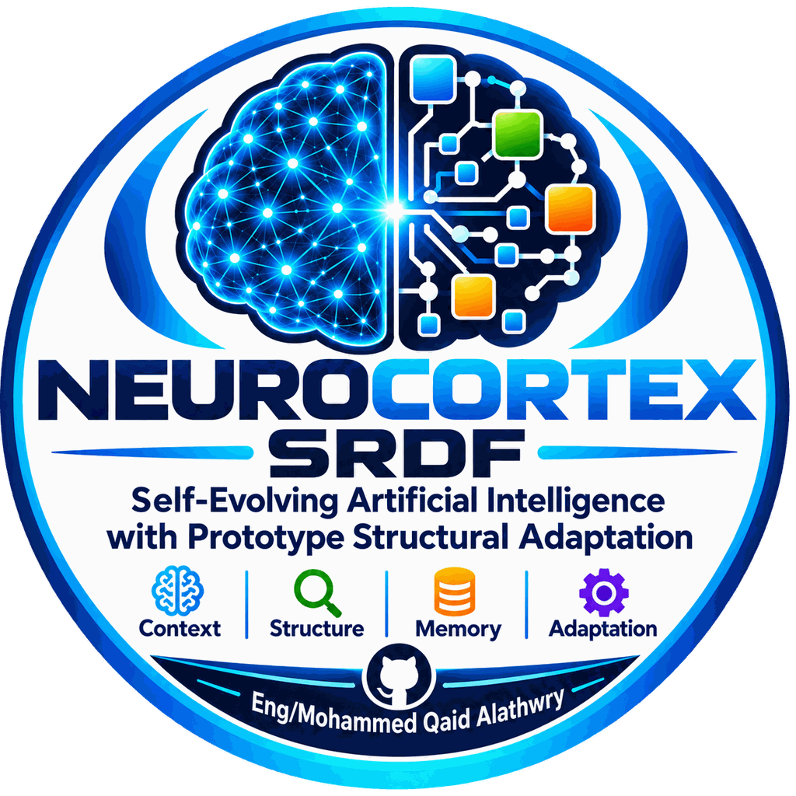

Self-Reinforcing Development Framework (SRDF)
A Conceptual White Paper
NeuroCortex is a research framework centered on the Self-Reinforcing Development Framework (SRDF). SRDF proposes a controlled, auditable approach to runtime structural adaptation in machine learning systems. Rather than allowing unbounded self-modification, SRDF separates the adaptation process into explicit stages: observation, analysis, candidate generation, evaluation, authorization, and controlled state transition.
The framework is organized around three principal components: Trawler, Generator, and Arbiter.
The conceptual white paper describes the framework, its design principles, and its scope. It is a conceptual document: it does not report experimental results, does not present quantitative evaluation, and does not constitute prior publication of any future manuscript.
The full repository — including reference implementation, phase documentation (S01, S03), protocols, and artifacts — is available on GitHub.
NeuroCortex is an ongoing research project. The material in this repository is presented as a conceptual and methodological foundation, not as a finished claim about capability or superiority. The repository does not claim general or universal performance improvement, statistical significance of any result, self-evolving artificial general intelligence, unrestricted or unbounded self-modification, or superiority over any existing method or architecture.
Released under the Apache License 2.0.